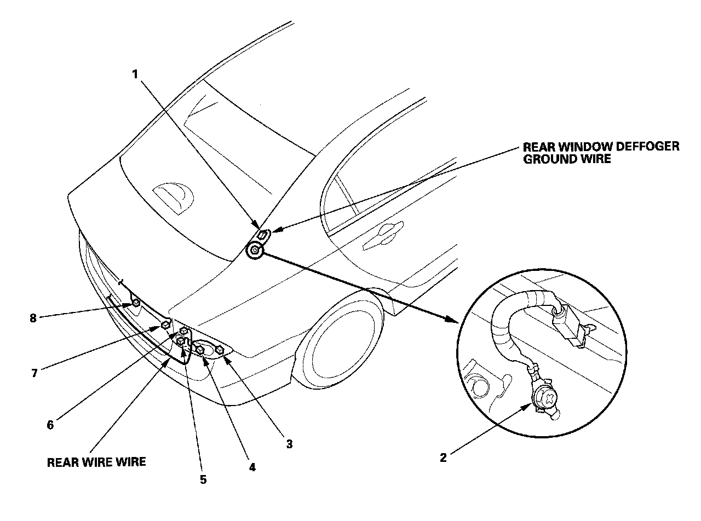
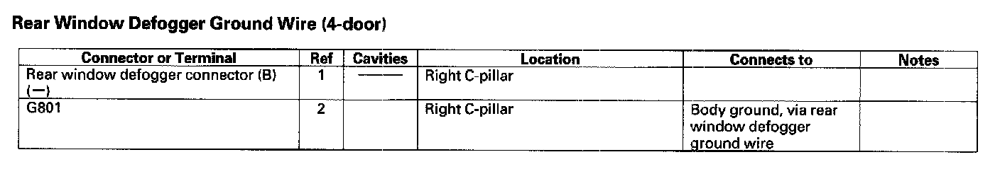
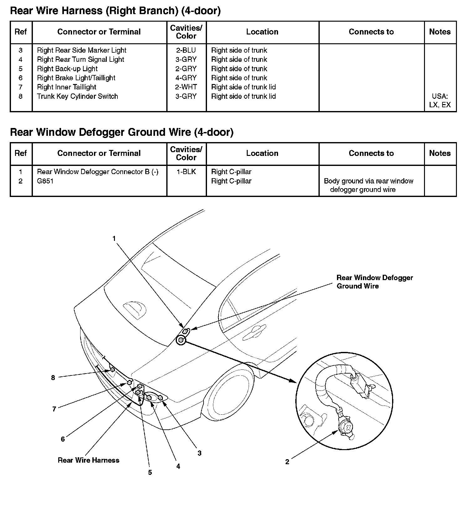

Rear Window Defogger Ground Wire (4-Door)
Harness Location View:

Rear Window Defogger Ground Wire (4-door):

Rear Wire Harness (Right Branch) (4-door)/Rear Window Defogger Ground Wire (4-door):



